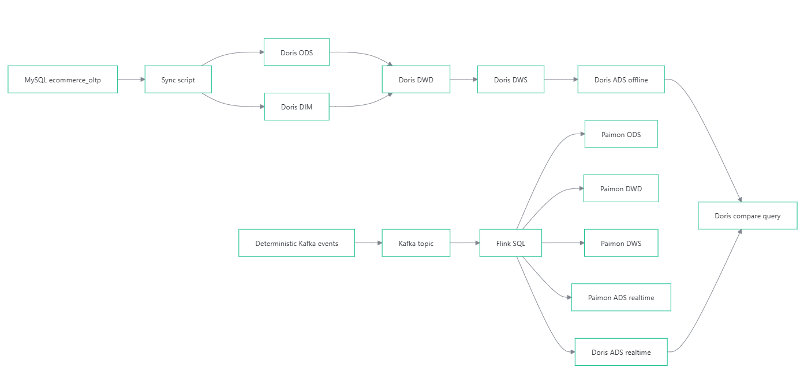
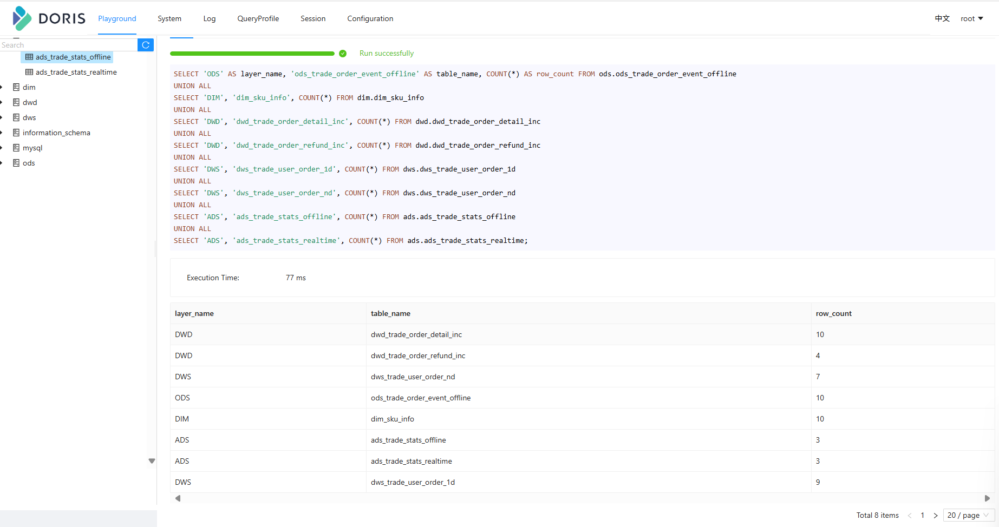
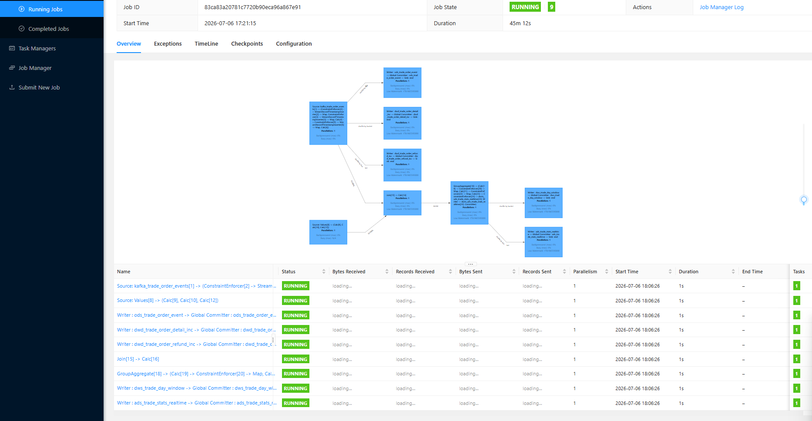
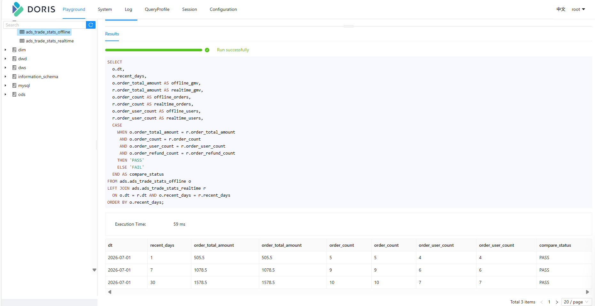
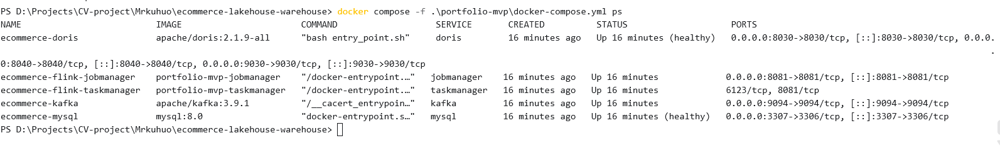

指标口径容易分裂
离线报表和实时看板如果各自实现，GMV、订单数、退款订单数很容易因为过滤条件或日期范围不同而不一致。
离线链路强调稳定重算和历史口径，实时链路强调持续更新和低延迟看板。真正的难点不是让两个系统各跑一遍，而是让同一业务指标在两套技术栈里有一致口径、可解释结果和可复现验收。
离线报表和实时看板如果各自实现，GMV、订单数、退款订单数很容易因为过滤条件或日期范围不同而不一致。
Doris 承担 OLAP 查询服务和统一 ADS 出口；Paimon 保存同一实时逻辑 DAG 并行物化出的 ODS/DWD/DWS/ADS 结果。
本次实现聚焦 MySQL、Doris、Kafka、Flink 与 Paimon，重点完成离线与实时双链路的本地复现和逐字段对账，避免额外组件稀释核心验证目标。
离线链路从 MySQL 业务库进入 Doris 并按物理表逐层加工；实时链路从 Kafka 事件进入 Flink SQL，由临时视图组成 DWD → DWS → ADS 逻辑计算链，再通过同一 Statement Set 并行写入 Paimon 各层与 Doris ADS。最后在 Doris 对账 offline ADS 与 realtime ADS。
MySQL 同步到 Doris ODS/DIM，再通过 Doris SQL 加工到 DWD、DWS、ADS。
Kafka 事件进入 Flink SQL 临时视图 DAG，Statement Set 将 ODS/DWD/DWS/ADS 与 Doris ADS 作为多个 sink 并行物化。
对齐 `dt + recent_days` 粒度，逐字段比较 GMV、去重订单/用户、退款订单/用户及客单价。

离线链路用 MySQL 模拟电商业务库，脚本同步到 Doris ODS 和 DIM，再通过 Doris SQL 完成 DWD 明细标准化、DWS 固定日期范围汇总和 ADS 指标产出。

实时链路使用 Kafka 确定性事件作为输入。DWD、DWS、ADS 由 Flink SQL 临时视图串成逻辑计算链；BEGIN STATEMENT SET 中的多个 INSERT 再把 ODS、DWD、DWS、ADS 并行物化到 Paimon，并通过 Doris Flink Connector 同步物化最终 ADS。Paimon 下游表在这个作业中不是逐层读取上游 Paimon 物理表。

两条链路都按 `dt + recent_days` 输出，核心指标包含 GMV、去重订单数、去重下单用户数、退款订单数、退款用户数和客单价。业务日期固定为 2026-07-01，`recent_days` 表示固定日期范围，并非 Flink Window TVF。
| recent_days | GMV | 订单数 | 下单用户数 | 退款数 | 退款用户数 | 客单价 |
|---|---|---|---|---|---|---|
| 1 | 505.50 | 5 | 4 | 2 | 2 | 101.10 |
| 7 | 1078.50 | 9 | 6 | 3 | 3 | 119.83 |
| 30 | 1578.50 | 10 | 7 | 4 | 4 | 157.85 |
最终不是只看两个表都有数据，而是在 Doris 中把 offline ADS 和 realtime ADS 按 `dt + recent_days` 对齐，用同一次查询逐字段比较 GMV、去重订单/用户、退款订单/用户和客单价。三个固定统计范围全部 PASS，说明两条链路在当前样例数据和指标合同下结果一致。

离线 ADS 和实时 ADS 都写入 Doris，BI 或演示只需要查一个 OLAP 层，也能直接做 offline/realtime 对账。
DWD → DWS → ADS 的依赖由临时视图表达；Paimon ODS/DWD/DWS/ADS 和 Doris ADS 是同一 Statement Set 的并行物化目标，用于检查、留存与统一查询。
通用 JDBC sink 会遇到 Doris MySQL 协议与 `ON DUPLICATE KEY` 语法兼容问题，因此改用 Doris Flink Connector 走 Stream Load。
Kafka topic 每次重置后再写入样例事件，避免重复生产导致实时 GMV 翻倍，保证离线和实时可以稳定对账。
第一版以 Docker Desktop + WSL2 为本地运行环境，启动 MySQL、Doris、Kafka、Flink 后按脚本顺序执行即可复现。

powershell -NoProfile -ExecutionPolicy Bypass -File .\scripts\validate-repo.ps1
powershell -NoProfile -ExecutionPolicy Bypass -File .\scripts\run-demo.ps1 -Reset这版的价值是跑通双链路指标合同和本地复现闭环，不把尚未完成的增强项写成已交付能力。
我能把同一个电商交易指标拆成 Doris 离线物理分层与 Flink SQL 实时逻辑计算链两套实现，使用 Statement Set 并行物化 Paimon 分层结果和 Doris ADS，再通过 Doris 逐字段对账；同时能说明本地 MVP 的实现边界。